04/11/2021 — Ngừng tim hoạt động điện vô mạch (PEA), tái lập tuần hoàn tự nhiên (ROSC) và không có STEMI trên điện tâm đồ. Các thử nghiệm ngẫu nhiên nói không có chỉ định tái tưới máu cấp cứu, đúng không?
Bản dịch tiếng Việt của bài "PEA cardiac arrest, ROSC, and no STEMI on ECG. Randomized trials say emergent reperfusion is not indicated, right?" – Dr. Smith’s ECG Blog. Giữ nguyên toàn bộ 14 hình ảnh của bản gốc.
Bài do Dr. Bobby Nicholson gửi và viết, với phần bình duyệt của Meyers và Bracey, và phần biên tập lớn của Smith
Bệnh nhân nữ 84 tuổi có tiền sử bệnh động mạch vành (CAD) đến khoa cấp cứu (ED)
sau một cơn ngừng tim ngoài bệnh viện. Bà đến viện khoảng 1 giờ sau
khi ngừng tim. Bà đang đi mua sắm cùng con gái thì bắt đầu cảm thấy không khỏe. Sau đó bà
bấm thiết bị báo động khẩn cấp cá nhân (life alert) và đội cấp cứu ngoài viện (EMS) được gọi tới chỗ bà. Khi EMS
đến, bà không bắt được mạch. Bà được làm 2 chu kỳ hồi sinh tim phổi (CPR) và tiêm 1 mg epinephrine
trước khi đạt tái lập tuần hoàn tự nhiên (ROSC). Bà chưa hề được khử rung. Không có các dải nhịp
trước viện; tuy nhiên, nhịp ngừng tim được báo lại là hoạt động điện vô mạch (PEA).
Khi đến khoa cấp cứu, bà tỉnh táo và định hướng đầy đủ (x 4),
độ bão hòa oxy 98% với oxy 10 L qua mặt nạ không thở lại (NRB). Bà có nhịp nhanh 110 nhịp/phút và huyết
áp 110/74. Điện tâm đồ được ghi ngay:

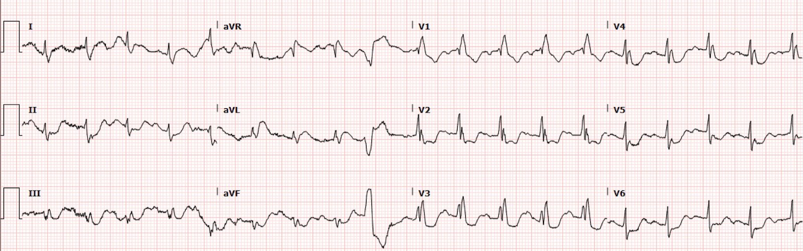
Bạn nghĩ gì?
Nhịp có vẻ là nhịp nhanh xoang kèm RBBB
và một PVC đơn lẻ. Vào thời điểm bệnh nhân đến viện, chưa biết liệu
bệnh nhân có RBBB từ trước hay không. Cũng có vẻ có ST chênh xuống ở hầu hết
các chuyển đạo, điều này không đáng ngạc nhiên vì có thể dự đoán một hình ảnh thiếu máu cục bộ
dưới nội tâm mạc sau ngừng tim.
Tuy nhiên, nếu chúng ta tìm kỹ hơn các dấu hiệu OMI trên điện tâm đồ:
1. còn có ST chênh xuống (STD) ở các chuyển đạo thành dưới kèm ST chênh lên (STE) ở chuyển đạo aVL (có thể cả chuyển đạo I, nhưng trôi đường nền khiến khó xác định).
2. Sóng T ở aVL có vẻ là sóng T tối cấp.
3. Có ST chênh xuống ở V1-V6, tối đa ở V3 và V4. Vẫn còn ST chênh xuống đáng kể kéo dài tới V6. aVR có đường nền kém và không hoàn toàn rõ có bao nhiêu ST chênh lên ở đó (ST chênh lên ngược hướng quá mức ở nhát PVC trong aVR gợi ý có một mức ST chênh lên nào đó).
Mặc dù có nhịp nhanh làm việc xác định khó khăn hơn, ST chênh xuống đáng kể ở V3-4 kết hợp với sóng T
tối cấp ở aVL kèm chênh xuống soi gương ở III làm dấy lên lo ngại về
nhồi máu cơ tim sau-bên. Chúng tôi đang công bố một nghiên cứu cho thấy ST chênh xuống tối đa ở V1-V4 khá đặc hiệu cho OMI thành sau, tuy nhiên chúng tôi tin rằng độ đặc hiệu giảm đi khi có nhịp nhanh.
______
Bình luận bổ sung của Smith: Việc ngừng tim kiểu PEA khiến ACS ít có khả năng hơn so với khi đó là ngừng tim có nhịp sốc được. Khi nhịp ghi được trên monitor đầu tiên trong ngừng tim do ACS là nhịp không sốc được, thường là vì bệnh nhân đã ở trong VF quá lâu đến mức nó đã thoái biến. Tuy nhiên, khi đó, thời gian ngừng tuần hoàn kéo dài khiến khả năng bệnh nhân còn tỉnh táo lúc đến viện thấp hơn nhiều. Thuyên tắc phổi là nguyên nhân khá thường gặp của ngừng tim PEA, vì vậy luôn phải xem xét kỹ thất phải, ngay cả khi điện tâm đồ trông giống OMI. Tôi không chắc liệu siêu âm tim tại giường có được thực hiện ở ca này hay không.
Tại sao?
Ngừng tim có thể dẫn đến OMI típ 2 nặng do mất cân bằng cung-cầu (tình trạng lưu lượng thấp gây ra dòng chảy kém đến mức có thiếu máu cục bộ dưới thượng tâm mạc)
Vì vậy, có thể điện tâm đồ thiếu máu cục bộ này là do ngừng tim và nhịp nhanh chứ không phải do ACS, nhưng phải mặc định đó là ACS (OMI) cho đến khi chụp mạch vành chứng minh điều ngược lại.
Theo 2 thử nghiệm ngẫu nhiên này (TOMAHAWK và COACT, tài liệu tham khảo ở cuối bài), chụp mạch vành cấp cứu không có ích lợi gì đối với ngừng tim “không có ST chênh lên.”
Các nghiên cứu này không đề cập đến các dấu hiệu OMI trên điện tâm đồ!!!
–Thử nghiệm COACT có rất nhiều vấn đề. Xem phần bàn luận của tôi ở cuối bài.
–Còn trong thử nghiệm TOMAHAWK gần đây hơn, phần lớn bệnh nhân hôn mê và tử vong do thiếu oxy não. Vì vậy, nếu bệnh nhân tỉnh táo và có dấu hiệu OMI trên điện tâm đồ, không có lý do gì để tin rằng nên trì hoãn chụp mạch vành.
____
Phòng thông tim đã được kích hoạt, và bệnh nhân được điều trị
bằng aspirin và heparin. Bác sĩ tim mạch khám bệnh nhân tại giường. Lúc này bệnh nhân
thở oxy qua ống thông mũi và ngồi thẳng trên giường. Than phiền duy nhất của bà là đau ngực sau hồi sinh tim phổi. Việc bà tỉnh táo và nói chuyện được sau một cơn ngừng tim được cho là PEA với nhiều chu kỳ hồi sinh tim phổi nhiều khả năng cho thấy có thể đã không có ngừng tim hoàn toàn mà là không bắt được mạch khi cung lượng tim rất thấp nhưng khác không. Siêu âm để phát hiện hoạt động của tim và mạch trên siêu âm có thể rất hữu ích trong những tình huống này.
1254: ghi lại điện tâm đồ khi có bác sĩ tim mạch tại giường

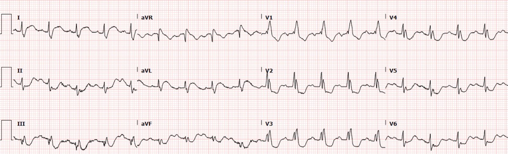
Các dấu hiệu OMI vẫn tồn tại
Và đây là chuyển đạo aVL phóng to từ cả hai điện tâm đồ ở trên:

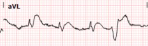

Ở đây có thể thấy rõ sóng T ở aVL vẫn có dáng tối cấp vì chúng nối liền ngay với phần cuối
phức bộ QRS, có diện tích và thể tích lớn, hình thái lồi, và có điện thế tương tự sóng R.
Tiếp theo là V3 phóng to để xem kỹ hơn:

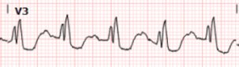

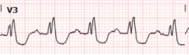
Khi so sánh V3, ST chênh xuống
rõ hơn một chút, lúc này gần đến mức chênh xuống 3-4mm. Như đã
mô tả trước đây, (https://drsmithsecgblog.com/2018/02/right-bundle-branch-block-and-st.html)
V1-3 trong RBBB có thể có một mức ST chênh xuống nhỏ, tương xứng ở trạng thái nền, đặc biệt khi có hình ảnh RSR’, tuy nhiên ở ca này ST chênh xuống rõ ràng vượt quá tỷ lệ bình thường.
Như vậy, chúng ta đã thấy ST chênh xuống ngược hướng quá mức, tối đa ở V3-V4, và phải coi đây là dấu hiệu chẩn đoán OMI thành sau cho đến khi chứng minh được điều ngược lại.
Bệnh nhân được đưa vào phòng thông tim sau khi
bác sĩ tim mạch đánh giá. Xem lại hồ sơ bệnh án điện tử (EMR) cho thấy tiền sử CAD với
tiền sử phẫu thuật CABG từ lâu.
Điện tâm đồ nền của bà ở bên dưới.

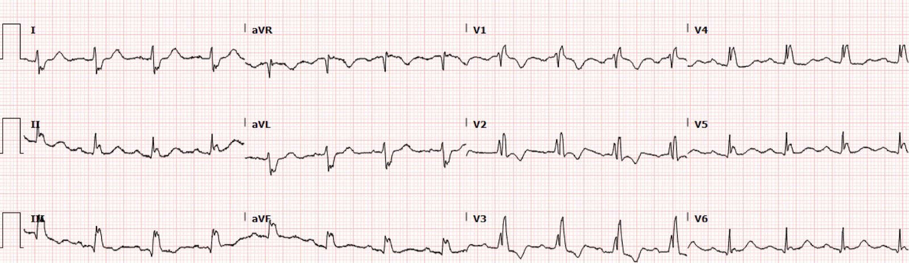
Ở đây ta thấy QRS dạng RBBB với sóng R’ kéo dài tới tận V5. Ta thấy ST chênh xuống nhẹ ở V2-4, nằm trong tỷ lệ bình thường so với phức bộ QRS, cùng với sóng T ngược hướng phù hợp ở các chuyển đạo này. Ngoài ra, sóng S sâu hơn ở chuyển đạo I và aVL
với sóng T có kích thước phù hợp.
Sự thay đổi hình thái thật đáng kinh ngạc khi đặt cạnh nhau, như các hình phóng to dưới đây:

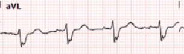

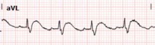
Thông tim cho thấy:
Giải phẫu phức tạp sau phẫu thuật CABG x 4 trước đây với
LIMA nối vào LAD còn thông phía hạ lưu. RCA tự thân của bà bị tắc, tuy nhiên
cầu nối tĩnh mạch hiển (SVG) tới tuần hoàn vành phải đoạn xa còn thông. Cầu nối tĩnh mạch hiển tới nhánh chéo cũng còn thông. LAD và
động mạch mũ tự thân bị tắc, cũng như cầu nối tĩnh mạch
hiển tới nhánh bờ tù đã được nong bóng
rồi hút huyết khối mà không cải thiện nhiều. Sau đó dùng thiết bị Penumbra
kèm bơm nicardipine phía hạ lưu, giúp tái lập dòng chảy
với một tổn thương 80% ở đoạn xa của cầu nối, và tổn thương này được
đặt stent. Kết quả là dòng chảy được tái lập ở hạ lưu tuần hoàn nhánh bờ tù (OM).
Như vậy, thủ phạm là tắc cấp hoàn toàn 100% (TIMI 0) do huyết khối của cầu nối tĩnh mạch hiển tới nhánh bờ tù (vùng sau-bên). Điều này khớp hoàn hảo với các dấu hiệu trên điện tâm đồ.

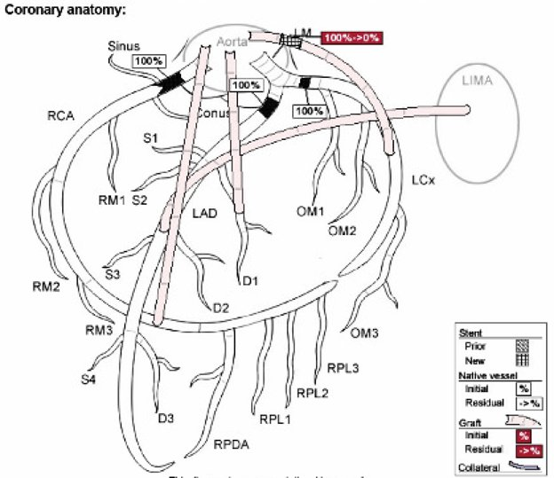
Đây là điện tâm đồ đầu tiên sau thông tim lúc 1443:

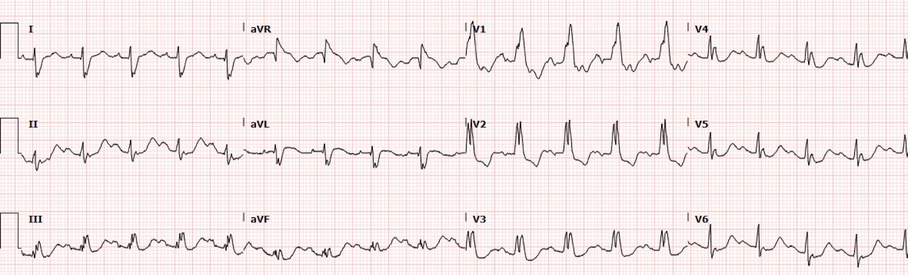
Sau thông tim, ta thấy sóng T của bệnh nhân
ở I và aVL trở về bình thường và sóng S sâu hơn. Đồng thời
ST chênh xuống ở V2-3 trở về gần mức nền của bà.
Dưới đây là chuyển đạo aVL và V3 trước can thiệp (hình bên trái) và sau can thiệp (hình bên phải):

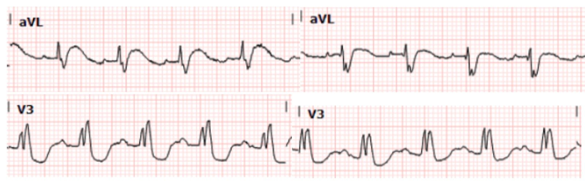
Đây là điện tâm đồ muộn hơn lúc 1922:

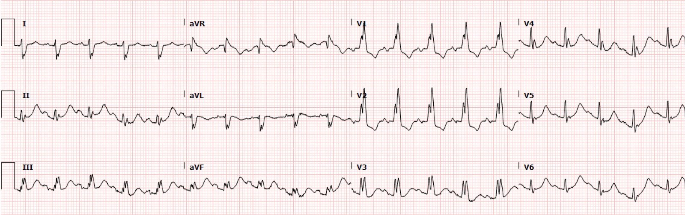
Điện tâm đồ gần nhất cho thấy tiếp tục cải thiện.
Kết quả troponin ban đầu (troponin I độ nhạy cao) có sau khi bệnh nhân
đã được đưa đi thông tim, nhưng đã tăng ở mức 2.598 ng/L. Các lần xét nghiệm troponin lặp lại
trong thời gian nằm viện đều lớn hơn 25.000 ng/L x 3 lần. Diễn biến tại bệnh viện có biến chứng
sốc tim cần nhiều thuốc vận mạch mà huyết động không cải thiện.
Siêu âm tim vào ngày nằm viện thứ 1 cho thấy LVEF
55-60% với vô động các phân đoạn thành bên và một khuyết nhỏ ở
vùng giữa thành trước co bóp bình thường và phân đoạn trước bên
vô động. Ngoài ra, có chất tăng âm trong
khoang màng ngoài tim, gợi ý máu cục đã tổ chức hóa. Dù mới chỉ là ngày thứ 1, điều này được nhận định nhiều khả năng là do vỡ thất trái kèm
sinh lý chèn ép tim.
Bình luận của Smith: thường có các dấu hiệu trên điện tâm đồ của viêm màng ngoài tim khu trú sau nhồi máu (PIRP), vốn thường xảy ra trước khi vỡ tim. Xem ca này: Cardiac Arrest, hypotension, tachycardia (Ngừng tim, tụt huyết áp, nhịp nhanh))
MRI tim vào ngày nằm viện thứ 1 cho thấy LVEF 45%
với vô động thành trước bên đoạn đáy và đoạn giữa, thành dưới đoạn đáy và
thành trước đoạn giữa. Có tăng động vách liên thất, thành dưới đoạn giữa và
các vùng mỏm thất trái. Một lần nữa ghi nhận ổ tụ dịch không đồng nhất kích thước vừa ở
vùng màng ngoài tim phía bên và phía dưới. Cũng có một
ổ tụ dịch nổi bật ngay phía sau thành trước bên đoạn đáy.
Nhìn chung các dấu hiệu phù hợp nhất với vỡ thành trước bên đoạn đáy
liên quan đến nhồi máu cơ tim cấp (AMI).
Cuối cùng, gia đình bệnh nhân chọn
chăm sóc giảm nhẹ và điều trị bảo tồn. Trong thời gian nằm viện, bà
xuất hiện phù phổi, bệnh não, tổn thương thận cấp (AKI) và rung nhĩ
kịch phát, được điều trị bằng amiodarone tiêm tĩnh mạch liều bolus và digoxin tĩnh mạch.
Ngày nằm viện thứ 2:

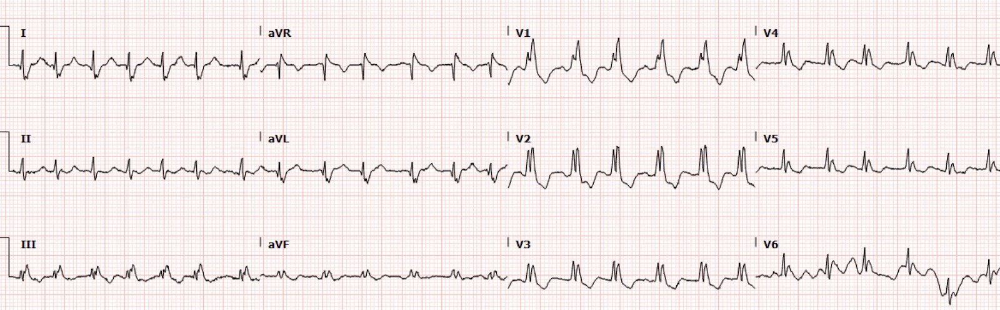
Dù được điều trị bảo tồn, bà tiến triển
nhanh trong thời gian nằm viện và được cai toàn bộ thuốc vận mạch, chức năng thận
hồi phục và hết bệnh não. Siêu âm tim lặp lại cho thấy LVEF 50 đến 55%
với nghi ngờ tràn dịch màng ngoài tim. Cuối cùng bệnh nhân được xuất viện chuyển tới
cơ sở phục hồi chức năng cấp vào ngày nằm viện thứ 7.
Những điểm cần học:
Giống như LBBB, nhịp tạo nhịp và mọi phức bộ QRS bất thường và rộng khác, RBBB tuân theo quy luật ngược hướng phù hợp. Điều này thường có nghĩa là chỉ nên có một mức ST chênh xuống nhỏ, tương xứng ở các chuyển đạo có R’, thường là các chuyển đạo trước tim bên phải.
Trong ACS, ST chênh xuống tối đa ở V1-V4 là OMI thành sau cho đến khi chứng minh được điều ngược lại. Trong bối cảnh RBBB, đó là ST chênh xuống quá mức xét theo tỷ lệ so với phức bộ QRS.
Đây là ví dụ về một người cao tuổi có bệnh động mạch vành phức tạp đã biết, bị ngừng tim, không có tiêu chuẩn STEMI trên điện tâm đồ sau ngừng tim, được báo là ngừng tim PEA, nhưng chắc chắn cần tái tưới máu cấp cứu dựa trên các dấu hiệu điện tâm đồ. Nhiều bác sĩ tim mạch trong tình huống này hẳn đã từ chối tái tưới máu cấp cứu cho bà. Thật lòng tôi ngạc nhiên khi bệnh nhân này được thông tim cấp cứu. Nhưng tôi tin đó là điều đúng đắn, và tôi tin rằng kết cục của bà sẽ tệ hơn rất nhiều nếu không được tái tưới máu. Chúng ta có thể làm tốt hơn việc chỉ đơn giản nói “điện tâm đồ sau ROSC không có STEMI? không thông tim.”
Desch S, Freund A, Akin I, và cs. TOMAHAWK. Angiography after Out-of-Hospital Cardiac Arrest without ST-Segment Elevation. N Engl J Med [Internet] 2021; Truy cập tại: http://dx.doi.org/10.1056/NEJMoa2101909
Lemkes JS, Janssens GN, van der Hoeven NW, và cs. COACT. Coronary Angiography after Cardiac Arrest without ST-Segment Elevation. N Engl J Med [Internet] 2019; Truy cập tại: http://dx.doi.org/10.1056/NEJMoa1816897
Tôi bàn về COACT trong bài blog này, và dán lại phần bàn luận đó ở đây:
Một phụ nữ 60 mấy tuổi bị ngừng tim do rung thất (VFib) và không có STEMI trên điện tâm đồ sau ROSC.
Bàn luận về COACT, bởi Smith:
Thử nghiệm COACT có một khiếm khuyết chết người, và giờ đây đã khiến nhiều bác sĩ tim mạch tin rằng nếu không có tiêu chuẩn STEMI thì bệnh nhân không cần vào phòng thông tim.
Lemkes JS, Janssens GN, van der Hoeven NW, và cs. Coronary Angiography after Cardiac Arrest without ST-Segment Elevation. N Engl J Med [Internet] 2019; Truy cập tại: http://dx.doi.org/10.1056/NEJMoa1816897
Có nên đưa mọi bệnh nhân ngừng tim có nhịp sốc được đi chụp mạch vành bất kể có STEMI hay không có STEMI?
Từ lâu đã có tranh cãi về việc có nên đưa bệnh nhân có nhịp sốc được mà không có ST chênh lên vào phòng thông tim hay không, và một thử nghiệm ngẫu nhiên gần đây cho thấy không có lợi ích: Coronary Angiography after Cardiac Arrest without ST-Segment Elevation (COACT). Nghiên cứu này có một khiếm khuyết chết người: họ không theo dõi tất cả những “bệnh nhân không STEMI” KHÔNG được đưa vào nghiên cứu mà thay vào đó được chuyển đi chụp mạch vành ngay lập tức. Nghiên cứu được tiến hành ở châu Âu, nơi các hướng dẫn đề nghị đưa mọi ca ngừng tim có nhịp sốc được vào phòng thông tim cấp cứu. Vì vậy, rất có khả năng các bác sĩ đã rất ngần ngại đưa vào nghiên cứu những bệnh nhân mà họ nghi ngờ có nhồi máu cơ tim do tắc (OMI), ngay cả khi họ không có STEMI. Những bác sĩ này không muốn một bệnh nhân có OMI mà không phải STEMI bị phân ngẫu nhiên vào nhóm không chụp mạch vành. Nghi ngờ mạnh mẽ này được dữ liệu của họ ủng hộ: chỉ 22 trên 437 (5,0%) bệnh nhân trong nghiên cứu này có OMI.
Bao nhiêu phần trăm ca ngừng tim có nhịp sốc được mà không có ST chênh lên có OMI?
Nghiên cứu sổ bộ (registry) lớn này trên tạp chí Circulation 2010 báo cáo rằng ít nhất 1 tổn thương động mạch vành có ý nghĩa được tìm thấy ở 128 (96%) trong 134 bệnh nhân có ST chênh lên trên điện tâm đồ ghi sau khi tái lập tuần hoàn tự nhiên, và ở 176 (58%) trong 301 bệnh nhân không có ST chênh lên.
5% so với 58%!! Rõ ràng đã có sai lệch tuyển chọn (enrollment bias) đáng kể trong COACT.
Chúng tôi tại Hennepin gần đây đã công bố nghiên cứu này
Sharma và cs. (cùng với Smith và những người khác) nhận thấy rằng trong số các bệnh nhân ngừng tim có nhịp sốc được có OMI, điện tâm đồ ban đầu và các điện tâm đồ tiếp theo trước chụp mạch vành chỉ có độ nhạy 75% đối với OMI, với độ đặc hiệu tương tự.
Sharma A, Miranda DF, Rodin H, Bart BA, Smith SW, Shroff GR. Do not disregard the initial 12 lead ECG after out-of-hospital cardiac arrest: It predicts angiographic culprit despite metabolic abnormalities. Resuscitation Plus [Internet] 2020;4:100032. Truy cập tại: http://www.sciencedirect.com/science/article/pii/S2666520420300321